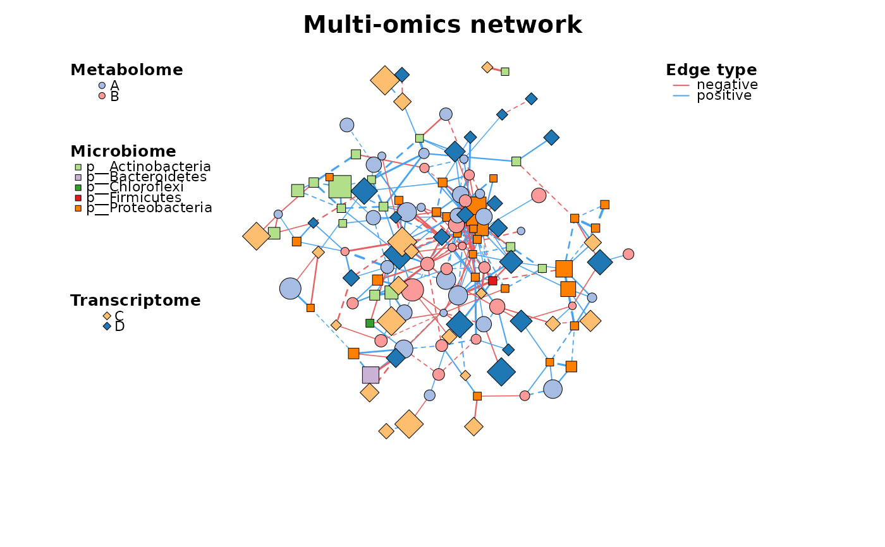

Multi-omics network build
multi_net_build(
...,
mode = "full",
method = "spearman",
filename = FALSE,
p.adjust.method = NULL,
r_threshold = 0.6,
p_threshold = 0.05,
use_p_adj = TRUE,
delete_single = TRUE
)some omics abundance tables
"full"
"spearman" or "pearson"
the prefix of saved .corr file or FALSE
see p.adjust
r_threshold (default: >0.6)
p_threshold (default: <0.05)
use the p.adjust instead of p-value (default: TRUE)
should delete single vertexes?
metanet
Other build:
c_net_build(),
c_net_from_edgelist(),
c_net_set(),
c_net_update()
data("multi_test")
multi1 <- multi_net_build(list(Microbiome = micro, Metabolome = metab, Transcriptome = transc))
#> All samples matched.
#> All features are OK.
#> Calculating 18 samples and 150 features of 3 groups.
#> Have not do p-value adjustment! use the p.value to build network.
multi1 <- c_net_set(multi1, micro_g, metab_g, transc_g,
vertex_class = c("Phylum", "kingdom", "type")
)
multi1 <- c_net_set(multi1, data.frame("Abundance1" = colSums(micro)),
data.frame("Abundance2" = colSums(metab)), data.frame("Abundance3" = colSums(transc)),
vertex_size = paste0("Abundance", 1:3)
)
c_net_plot(multi1)
